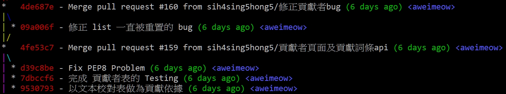
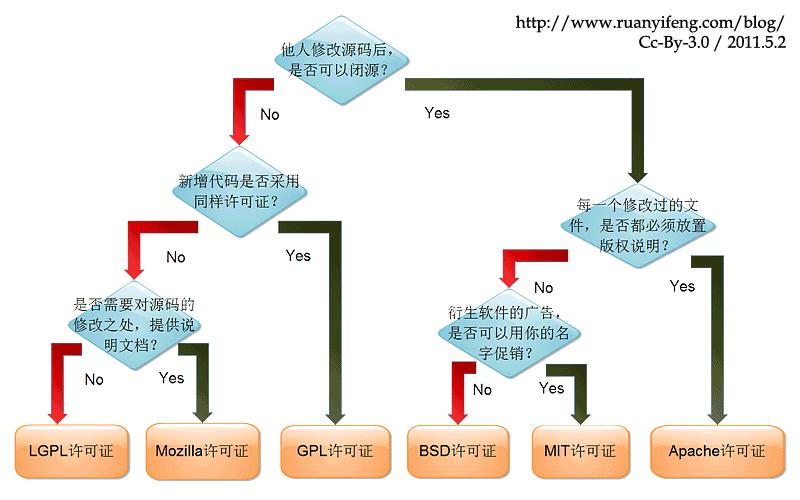

git workshop - 2
陳威祐
2016 / 10 / 24

git init
當我們執行 git init ...
- 會有一個
.git 資料夾
- 資料夾中有：
HEAD、index、objects、refs
- HEAD: 指向目前分支
- index: 暫存區資訊
- objects: 所有資料都在這
- ref: 提交物件的指標
Live Demo Time
demo-1.json
objects
$ echo 'test content' | git hash-object -w --stdin
d670460b4b4aece5915caf5c68d12f560a9fe3e4
$ tree .git/objects
.git/objects
├── d6
│ └── 70460b4b4aece5915caf5c68d12f560a9fe3e4
├── info
└── pack
tree and blob
Git 以一種類似 UNIX 檔案系統的方式來儲存內容
tree：對應檔案系統中的目錄blob：對應檔案系統中的檔案
Live Demo Time
demo-2.json

接下來開始新的旅程！
成為魔法師吧孩子！
Markdown Syntax: 最常用到的幾種
# h1
## h2
#### h4
- List 1 ( 也可以用 * 開頭)
- List 2
[文字](連結網址)

```python
print "HelloWorld"
```
Practice - 1
Write README.md for repo and publish to Github
我剛剛看了什麼 (ﾟдﾟ≡ﾟдﾟ)
- user: 告訴 git 你是誰 (Name, email)
- core: 關於 git 的一些相關預設配置
whitespace = cr-at-eol Windows and Unix's newline formatquotepath: off 禁止 git 把中文檔名轉義 (demo-3.json)
- alias: 把常用的指令寫成縮寫
git lg
git config --global alias.lg \
"log --color --graph --all --pretty=format:\
'%Cred%h%Creset -%C(yellow)%d%Creset %s %Cgreen(%cr)\
%C(bold blue)<%an>%Creset' --abbrev-commit --"

Practice - 2
把 git 的慣用編輯器改成你喜歡的 editor！
MIT License
我希望授權簡單就好，不須太嚴格
MIT 授權是一個寬鬆並簡短明瞭的授權，它提供給他人對於你的程式碼一切權利（包含使用、重製、修改、合併、出版、販售重製品 ... 等）
作者僅想保留版權，對於其他沒有任何限制，不過因為無償提供的緣故，所以也主張免除擔保責任。
修改者需要在發行版中保留原作者的許可協議聲明。

Apache License 2.0 (APL 2.0)
我在乎我的專利權
APL 2.0 與 MIT 一樣能夠使用、重製、修改、販售重製品 ... 等權利，
在重製時：
- 需附上 APL 2.0 全文
- 標示修改的檔案
- 保留原程式該保留的各項聲明
- 讓後手能夠閱讀到前手的聲明資訊
GNU General Public License 3.0 (GPLv3)
我在乎的是分享、改進
GPLv3 要求任何貢獻者、衍伸開發作品同樣以 GPLv3 來散布，
（也就是說，只要使用到 授權為 GPLv3 的 library 就須以 GPLv3 作為授權）
GPLv3 主張程式碼開源、免費使用、引用、修改、開發衍伸產品，
但不允許修改後的程式碼、衍伸的產品做為閉源商業軟體發布及銷售
當然你也可以參考這個選擇

source: https://read01.com/dB8mxE.html
Practice - 3
Add a LICENSE for your repository
How to add LICENSE to Github repo
remote
add remote branch example
git remote add origin git@github.com:aweimeow/git-workshop-example.git
git remote add origin https://github.com/aweimeow/git-workshop-example.git
git remote -v
# 查看目前的 remote branch
產生 ssh key
$ ssh-keygen
Generating public/private rsa key pair.
Enter file in which to save the key (/Users/schacon/.ssh/id_rsa):
Enter passphrase (empty for no passphrase):
Enter same passphrase again:
Your identification has been saved in /Users/schacon/.ssh/id_rsa.
Your public key has been saved in /Users/schacon/.ssh/id_rsa.pub.
The key fingerprint is:
43:c5:5b:5f:b1:f1:50:43:ad:20:a6:92:6a:1f:9a:3a schacon@agadorlaptop.local
我所碰到的那些問題 - 1
哎呀我不小心把我的密碼傳上去了呀

這個例子由 高應大學生議長 熱情贊助
BFG Repo-Cleaner
- 移除太大的檔案（超過 10MBytes）
- 移除密碼（像我們這個例子）
- 移除憑證、金鑰 ... 等
- 或是其他的隱私資料（Ex. 未公開的 API 網址 .. 等）
Let's take some examples :)
- Delete all file named 'id_rsa' or 'id_dsa'
bfg --delete-files id_{dsa,rsa} my-repo.git
- Remove all blobs bigger than 50 megabytes
bfg --strip-blobs-bigger-than 50M my-repo.git
- Replace all passwords listed in a file (prefix lines 'regex:' or 'glob:' if required) with
***REMOVED***
bfg --replace-text passwords.txt my-repo.git
我所碰到的那些問題 - 2
我想還原到上個 commit，
可是我已經推上去了耶 幫QQ
Remote branch
- b4f39a - Third Commit and pushed <- HEAD
- 04534f - Second Commit
- 4b964a - First Commit
Local branch
b4f39a - Third Commit and pushed- 04534f - Second Commit ←
HEAD
- 4b964a - First Commit
好險我一個機智還記得怎麼 revert commit
遠端的怎麼沒有 revert 阿阿阿
git push -f [remote_name] [branch_name]
Force push and rewrite commit
我所碰到的那些問題 - 3
我突然想從某個 Commit 分出
一個 branch 還來得及嗎？
original
- 4b964a - First Commit
- 04534f - Second Commit
- b4f39a - Third Commit
- a98787 - Fourth Commit ←
master, HEAD
Step 1. checkout to target
- 4b964a - First Commit
- 04534f - Second Commit ←
HEAD
- b4f39a - Third Commit
- a98787 - Fourth Commit ←
master
Step 2. checkout new branch
- 4b964a - First Commit
- 04534f - Second Commit
- 1e27cc - new branch ←
dev, HEAD
- b4f39a - Third Commit
- a98787 - Fourth Commit ←
master
Step 3. Cont. on dev or back to master
- 4b964a - First Commit
- 04534f - Second Commit
- 1e27cc - new branch ←
dev
- b4f39a - Third Commit
- a98787 - Fourth Commit ←
master, HEAD
Slide: https://github.com/aweimeow/git-workshop-slide